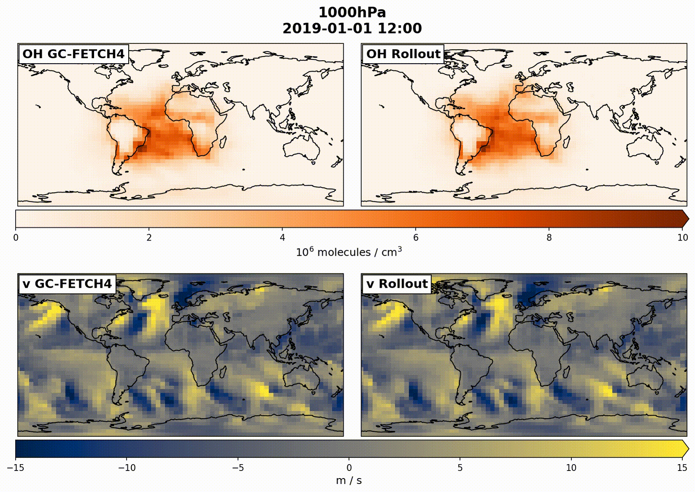

AuroraChem
Atmospheric chemistry and meteorology in one machine learning model
AuroraChem is a machine learning model that simulates global atmospheric chemistry and meteorology together. It predicts OH, Cl, NO, NO2, ozone, CO, and 14CO along with temperature, humidity, and winds on a 4°×5° grid with 13 pressure levels. A one-year simulation takes about 12 minutes on a single GPU.

About AuroraChem
AuroraChem is a fine-tuned version of Microsoft's Aurora atmospheric foundation model. It adds the seven chemical species needed to constrain the oxidative capacity of the troposphere. Chemistry and meteorology share one model state, so an observation of either one can update the other.
AuroraChem was trained on GEOS-Chem chemical fields and ERA5 meteorology for 2018 and evaluated on 2019. It takes the atmospheric state at two times, 6 hours apart, and predicts the state 6 hours later. Repeating this step produces rollouts that remain stable for one year.

AuroraChem is intended as the forward model for joint chemical and meteorological data assimilation. Users can run free rollouts or replace any subset of fields with observations during a rollout. In the paper, inserting only meteorological fields recovers the seasonal cycle of OH, and inserting only TROPOMI-like NO2 columns constrains OH about as well. The model is differentiable, so it also provides gradients for variational methods without an adjoint.
Outputs and capabilities
- 6-hourly global 3D fields of OH, Cl, NO, NO2, ozone, CO, and 14CO
- Temperature, specific humidity, winds, and geopotential height on 13 pressure levels
- Year-long global simulations on a single GPU
- Insertion of chemical or meteorological fields during a rollout
- Gradients through automatic differentiation
- Pretrained weights at 4°×5°
How do I access AuroraChem?
The AuroraChem code is on GitHub, and the pretrained weights are on the Model weights page. To get started, follow the Quick start, which runs a one-year rollout. The Model description covers the training data, architecture, and evaluation. For a full scientific description, see Kim et al. (submitted).
Citation
Kim, E. J., Mei, E. J., Ivatt, P. D., Murray, L. T., and Turner, A. J. (submitted), Enabling joint chemical and meteorological data assimilation with an atmospheric foundation model, submitted.